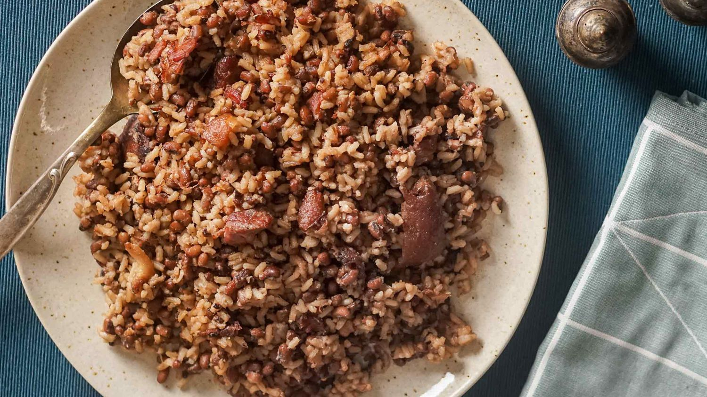

Hoppin' John

Description
Hicks in the American South eat these beans to celebrate the new year. For some reason my family does too.
Last time I made this I overdid it with the cayenne and experienced the second coming of Jesus Christ. Don't be like me.
Ingredients
- 2 cups chicken broth
- 1 cup white rice
- 1 pound bulk, lean pork sausage, hot or regular, OR 12 oz chopped, cooked ham
- 1 cup of chopped onion
- 1 red bell pepper, chopped
- 1 cup of chopped celery, including leaves
- 1 cup diced carrots
- 1⁄2 tsp thyme
- 1⁄2 tsp oregano
- 1⁄2 tsp basil
- 1⁄2 tsp cayenne pepper
- 1 tsp salt
- 1 tsp black pepper
- 1 bay leaf
- 2 14-oz cans of black-eyed peas, rinsed and drained
Steps
- Cook rice in chicken broth for ~10-12 min. Rice should still be "wet". 😉
- In the meantime, sautee the onion, red pepper, celery, and carrots in a large pan over medium-high heat for ~15 min, until the vegetables are cooked.
- Add ham to the pan and stir to heat.
- Stir in rice, thyme, oregano, basil, cayenne pepper, salt, black pepper, and bay leaf.
- Add the black-eyed peas to the pan and simmer an additional 5-10 minutes until the peas are heated through.
Home